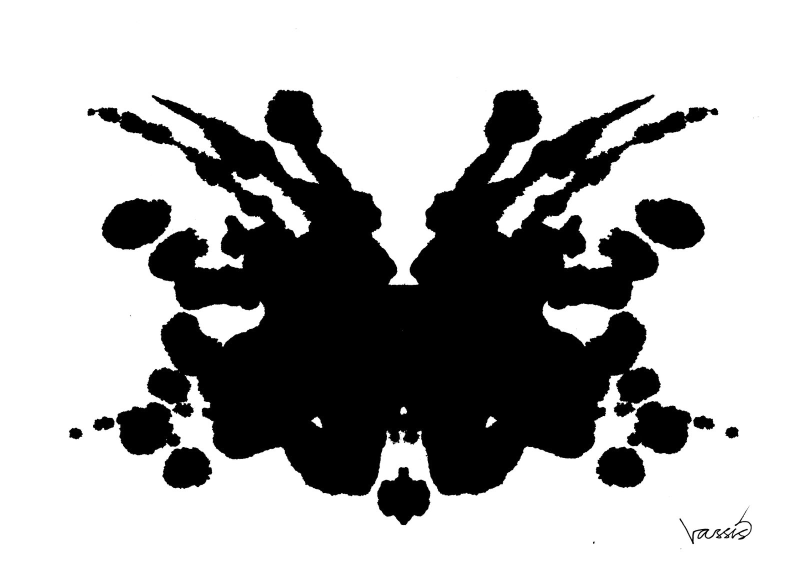
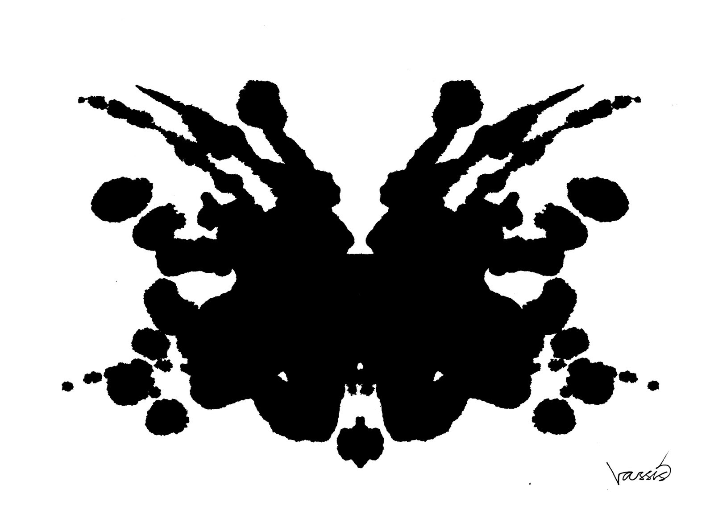
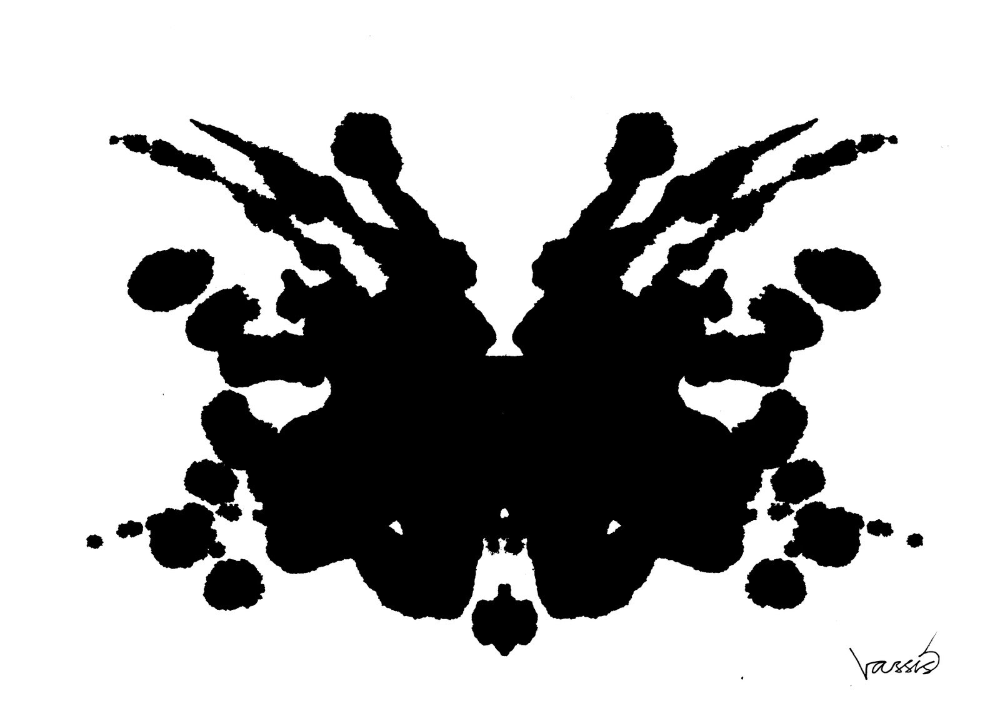

El EEG puede aparecer a los que lo ven por primera vez como un grupo de líneas cruzándose sin sentido de las que no se puede extraer ninguna informacion. Como una prueba de Rorschach con manchas de tinta con formas ambiguas donde lo que se ve depende es muy subjetivo.

Afortunadamente, los EEG no son pruebas de Rorschach y hay mucha información objetiva y útil que se puede extraer del EEG. Interpretar el EEG consiste en reconocer los elementos típicos o patrones electroencefalográficos. Al principio es difícil identificar esos elementos típicos y cuando uno se enfrenta a un EEG por primera vez no sabe ni por dónde empezar. Esta página intentará ayudar a los lectores de EEG novatos dándoles el reconocimiento de patrones más básico en el EEG: identificar vigilia y las distintas fases del sueño. Este es un buen inicio para empezar a leer EEG.
Las imágenes de abajo ilustran trazados típicos de EEG durante vigilia y distintas fases del sueño, poniendo especial atención en los elementos mas relevantes. Después, hay unas preguntas para solidificar esos nuevos conceptos. Finalmente, se resumen los conceptos más relevantes de esta página.

Hay principalmente tres elementos que permiten identificar la vigilia durante el EEG:


Las ondas del vertex son los elementos que aparecen durante el adormecimiento:


Los husos del sueño son los elementos característicos de la fase II del sueño. Las ondas del vertex aún aparecen en la fase II:
Las ondas lentas son los elementos típicos de la fase III del sueño. Los husos del sueño aún aparecen en la fase III del sueño:
Identificar estos elementos es relativamente fácil y te ayudará a reconocer las fases más importantes del sueño y la vigilia:
| Vigilia | Artefacto de parpadeo, ritmo posterior dominante, artefacto muscular |
|---|---|
| Adormecimiento | Ondas del vertex, todavía no hay husos del sueño |
| Fase II del sueño | Husos del sueño (aún hay ondas del vertex) |
| Fase III del sueño | Ondas lentas (aún hay husos del sueño) |
Ahora eres capaz de identificar la mayoría de los EEG estando en vigilia, adormecimiento, fase II, o fase III del sueño.
Es cierto que los ejemplos en esta página son relativamente fáciles. Hay otros EEG que no se ajustan al caso típico. Además, esta
página no ha explicado cómo identificar el sueño con movimientos oculares rápidos (REM sleep). De todas formas, aprender la
tabla de abajo (no lleva mucho esfuerzo) te permitirá clasificar la mayoría de las fases del EEG, lo que es una gran ventaja.
| Vigilia | Artefacto de parpadeo, ritmo posterior dominante, artefacto muscular |
|---|---|
| Adormecimiento | Ondas del vertex, no husos del sueño |
| Fase II del sueño/b> | Husos del sueño (ondas del vertex persisten) |
| Fase III del sueño | Ondas lentas difusas (Husos del sueño persisten) |